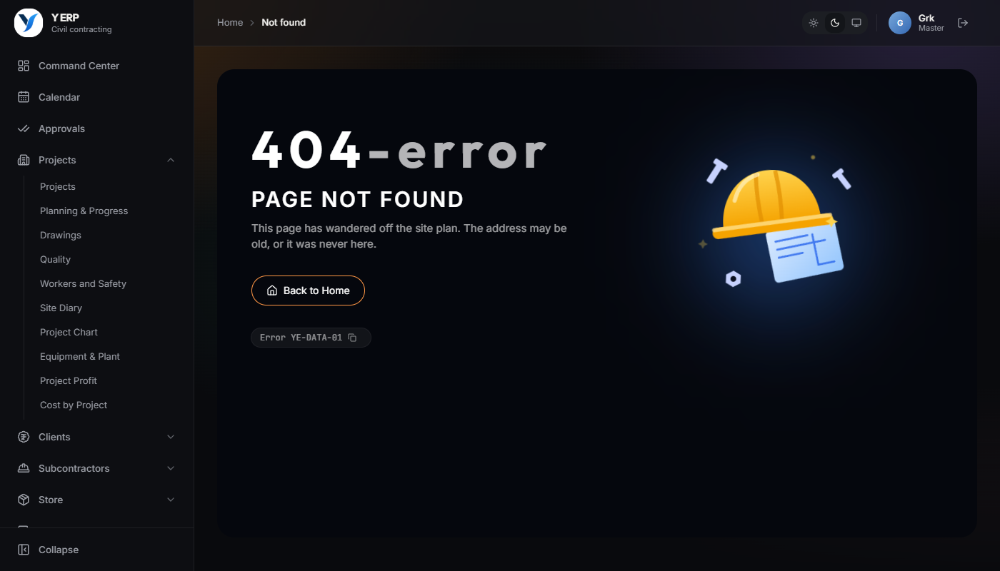
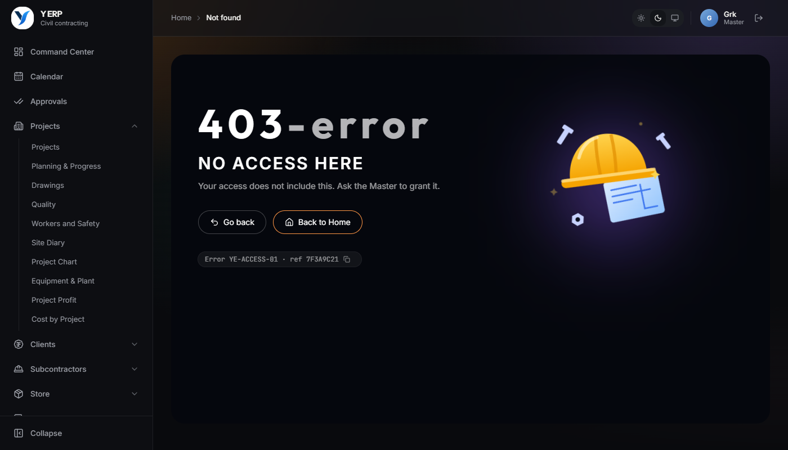
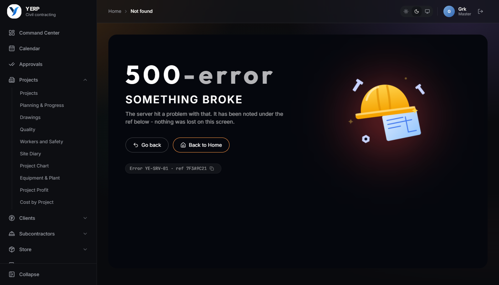
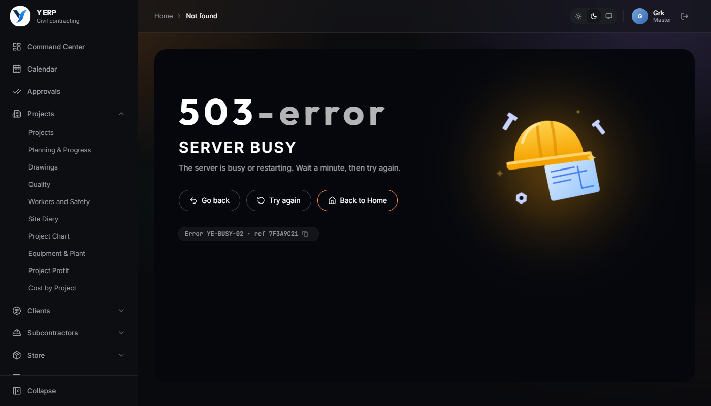
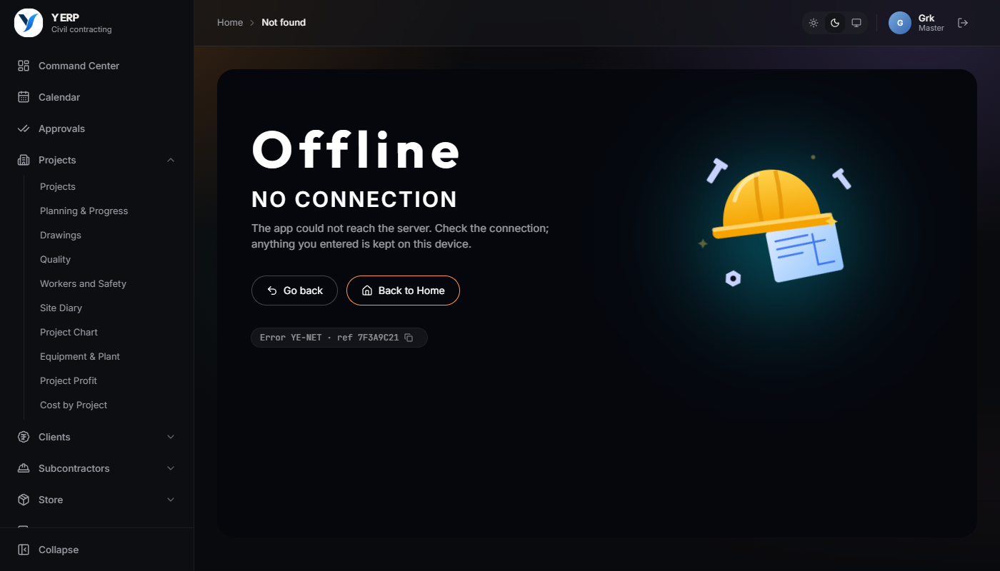
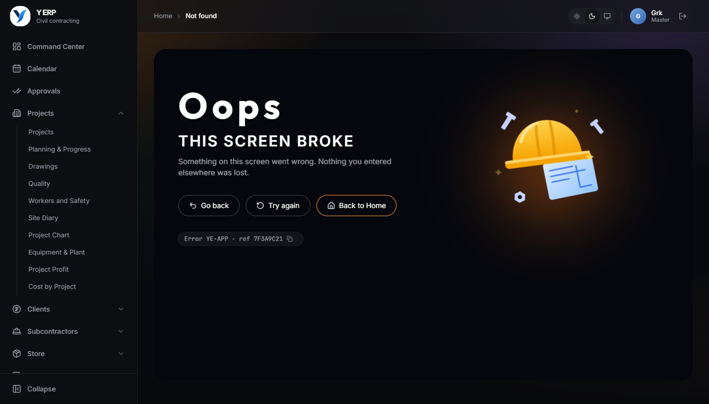
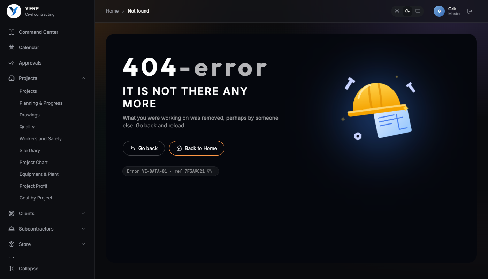

What a person sees when something fails. Mistakes in a form still show a short message beside the form, so nothing typed is lost.
An address the app does not have. Live now: open any wrong address, e.g. /next/anything.

Opening or saving something the person's access does not include.

A save hit a server fault. Go back returns to the screen with everything typed; the ref is in Settings > Error log.

The server is busy or restarting.

The app could not reach the server.

A screen crashed. It is reported to Settings > Error log under the same ref.

Saving something that someone else removed meanwhile.
